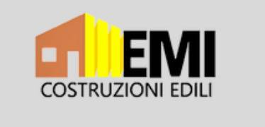
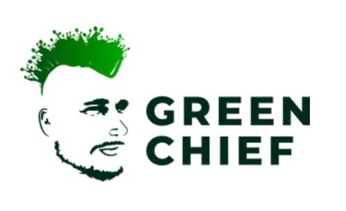
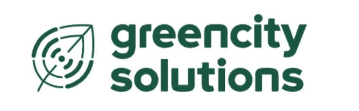
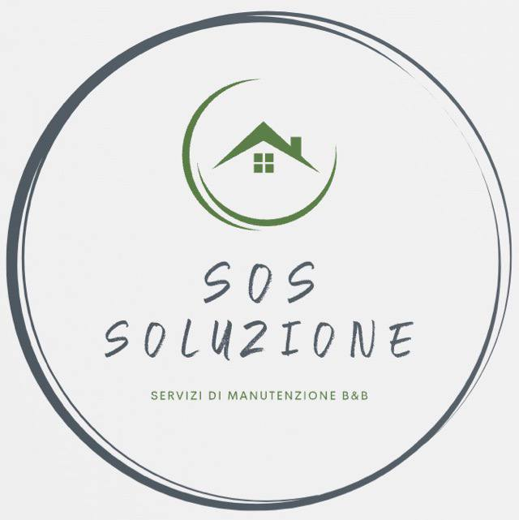
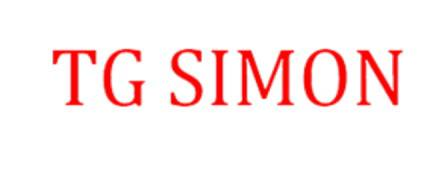
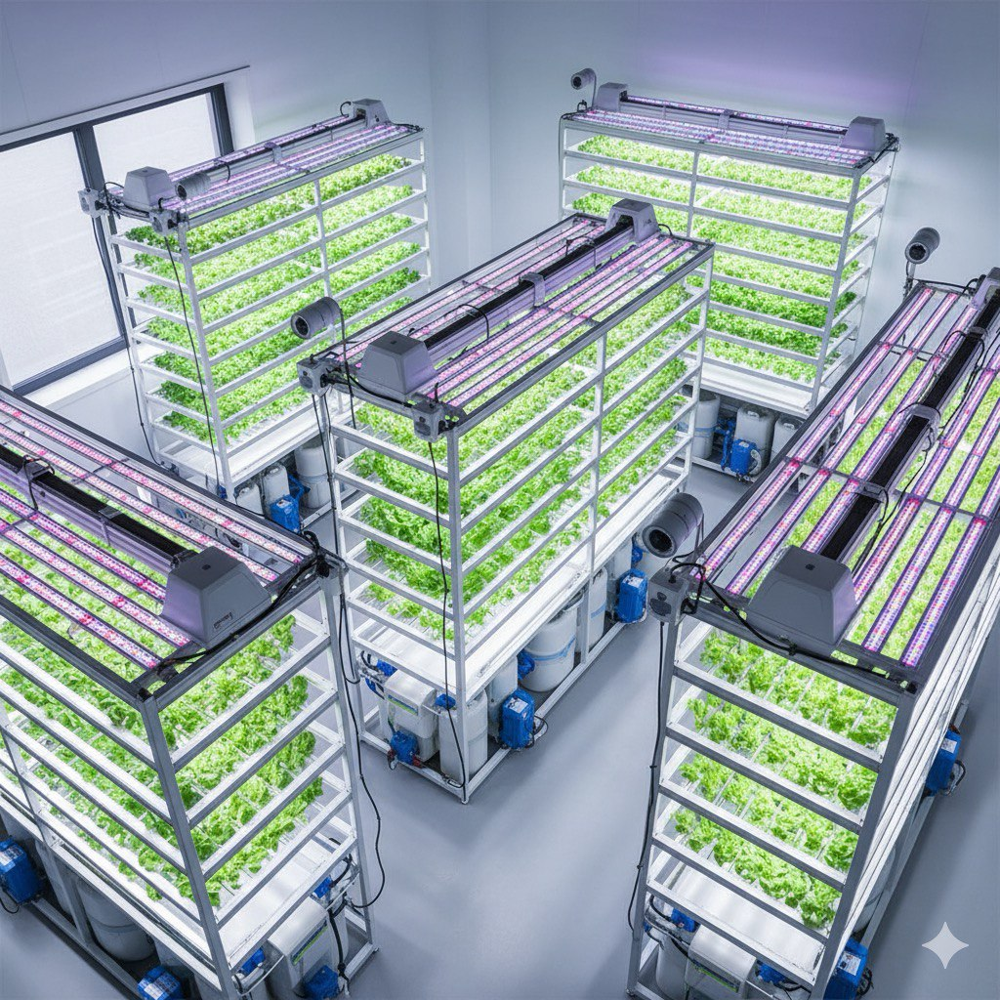
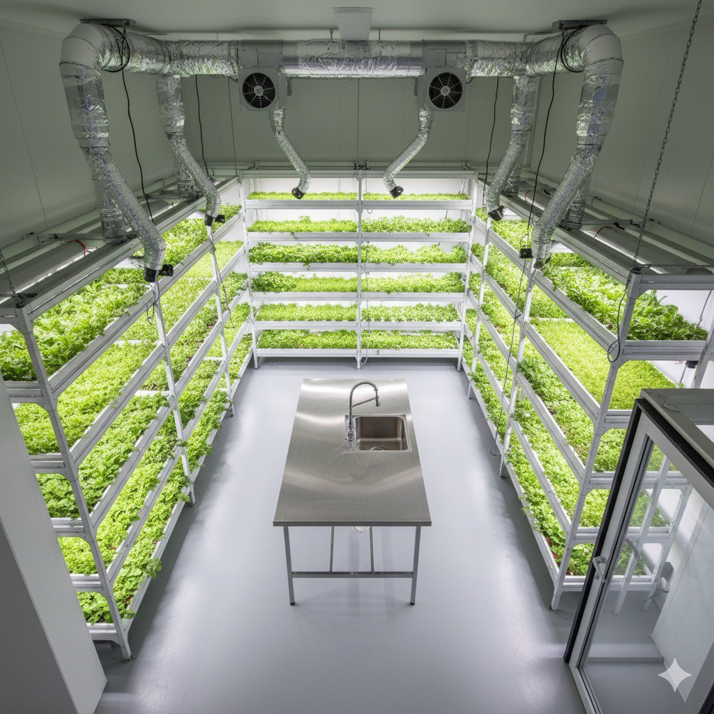
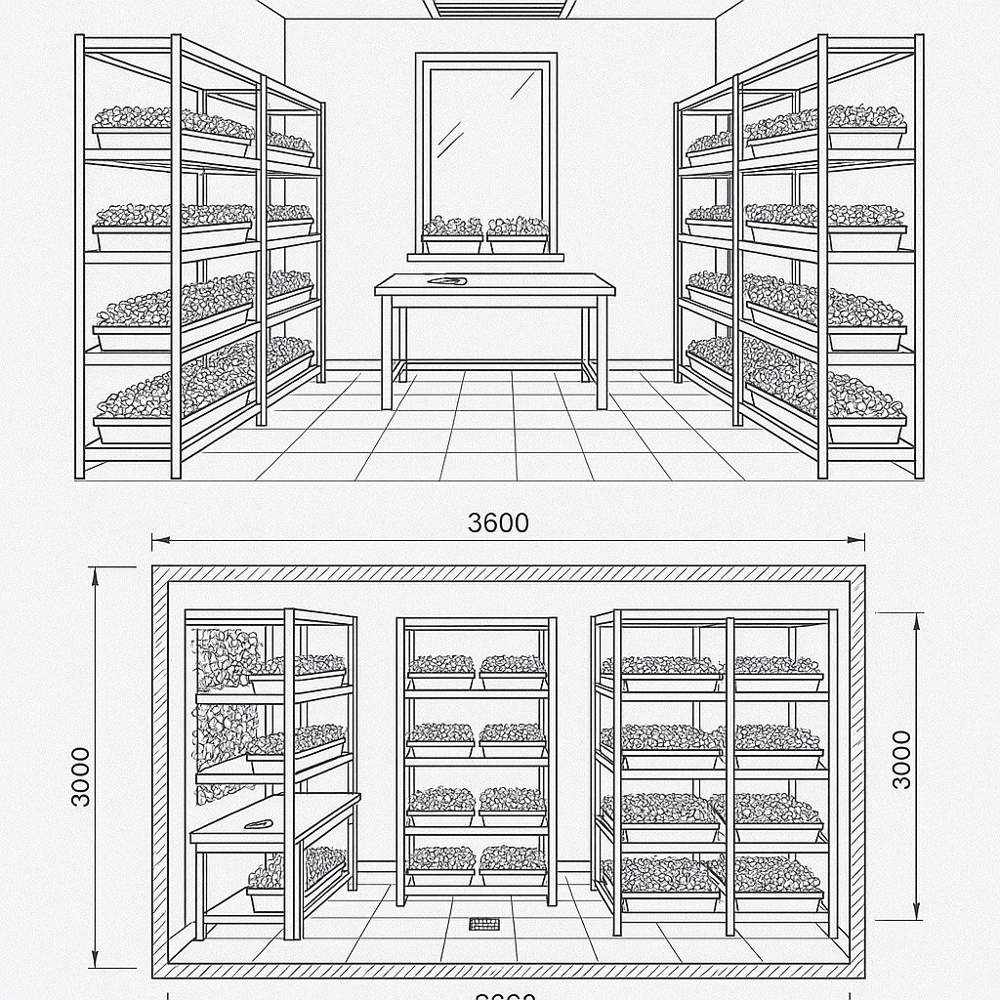

The Future is Calling
Repurposing Italy's infrastructure into a network of smart, sustainable urban nodes.
Our Success is Built on a Foundation of Diverse Expertise





Proposition 1: The Smart Urban Hub
We propose the "Cabina del Futuro," a complete overhaul of the phone booth's functionality. Each unit will become a self-sufficient, solar-powered smart node equipped with a range of essential modern services.
Configurations for Every Need
The Smart Urban Hub is not a one-size-fits-all solution. We propose several models that can be deployed based on the specific needs of a location.
The Tourist Hub
Located in high-traffic tourist areas like Piazza Navona or near the Colosseum. It prioritizes services for visitors.
The Community Hub
Designed for residential areas and local squares. It focuses on services for the local community.
Standard Features in Every Hub
Proposition 2: Bio-Tech Air Solutions
We propose integrating proven green technologies like moss-based bio-filters into urban furniture and advertising stands to actively combat air pollution and urban heat.
.png)
.png)
.png)
Proposition 3: Rooftop Farming
We transform unused rooftop technical rooms into indoor farms, creating a profitable, scalable urban farming model.
How It Works
Benefits
Partnership
Tailored for Every Community



Let's Build the Future Together
We believe this project can redefine public spaces across Italy. If you are interested in partnering with us, learning more about the technology, or discussing a pilot program, we would love to hear from you.
Get in Touch